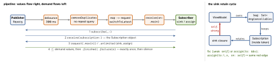

ios-swift · folio
In one line: Four ways to observe on iOS — NotificationCenter (broadcast bus),
KVO (one NSObject property), Combine (typed streams +
operators + demand), @Observable (per-property read tracking,
iOS 17). Every one hands you a lifetime object; what matters is
who owns it and whether the closure owns you back.
Download PDF Print view LaTeX source


The four mechanisms
| Shape / needs | Lifetime handle | Thread / trap | |
|---|---|---|---|
| Notif. Center | many-to-many, Notification.Name, untyped userInfo | block API returns a token: call removeObserver(token); center retains the block | runs on the posting thread unless queue: given |
| KVO | one property; NSObject + @objc dynamic | NSKeyValueObservation — invalidated on deinit | fires on the thread that mutated; no Swift structs |
| Combine | typed Output/Failure, operators, demand | AnyCancellable — cancels on deinit | receive(on:); one error ends it |
@Observable | macro on a class; iOS 17 | SwiftUI: automatic; else withObservationTracking | onChange fires once, on willSet — re-register |
How Combine works
- Publisher = a recipe; nothing runs until a Subscriber attaches — a cold one (
dataTaskPublisher) re-runs per subscriber (share()to multicast; Subjects are hot).Futureis the exception: runs eagerly, once (wrap inDeferred). - Demand is backpressure:
receive(_:)returns extra demand (additive).sink/assignask.unlimited. - Subjects:
PassthroughSubject— no value, events only;CurrentValueSubject— holds.value, replays it to new subscribers (state). Dead aftersend(completion:). @Publishedemits on willSet: inside the sink,self.xis still the old value — use the argument.- Schedulers:
receive(on:)moves downstream delivery (put it just before UI work);subscribe(on:)moves the upstream subscribe / request / cancel work.DispatchQueue.mainoverRunLoop.main(paused while the user drags a scroll view).
Operators — the pairs that get confused
debounce= emit last after a quiet gap (search box);throttle= at most one per interval (latest:first/last).combineLatest= latest of each on any change, silent until all emitted once;zip= pairs by index;merge= interleave same type.flatMapkeeps every inner alive (maxPublishers:);map+switchToLatestcancels the stale one.catchswaps in a fallback publisher;replaceErrora value. Both still end the upstream — do it inside the inner publisher.removeDuplicatesneedsEquatable.
Example — typeahead VM, no cycle
final class SearchVM: ObservableObject {
@Published var query = ""
@Published private(set) var results: [Item] = []
private var bag = Set<AnyCancellable>()
init(api: API) {
$query
.debounce(for: .milliseconds(300),
scheduler: DispatchQueue.main)
.removeDuplicates()
.map { api.search($0).replaceError(with: []) }
.switchToLatest() // drop the stale request
.receive(on: DispatchQueue.main)
.assign(to: &$results) // no self capture, no token
// LEAK: .sink { self.results = $0 }.store(in: &bag)
// FIX: .sink { [weak self] in self?.results = $0 }
}
}Traps
- The cycle:
self→bag→ cancellable → sink closure →self.deinitnever runs, so the bag never cancels.[weak self]. assign(to:\.x, on: self)retainsselfstrongly.assign(to: &$x)(iOS 14) ties the subscription to the@Publishedstorage — no cycle, noAnyCancellable.- Dropped cancellable (
_ = pub.sink{}) cancels at once — “my sink never fires”. - Block-based NotificationCenter: keep the token and call
removeObserver(token); do not rely on releasing it. The block is retained by the center —[weak self]inside. - An error reaching the sink terminates the subscription: a search box stops working after the first failed request.
subscribe(on:)does not make the sink run on that queue.
Timeline
Remember
Values right, demand left, cancellable owns the chain, closure must not own
self. @Published = willSet. Passthrough = event, CurrentValue = state.